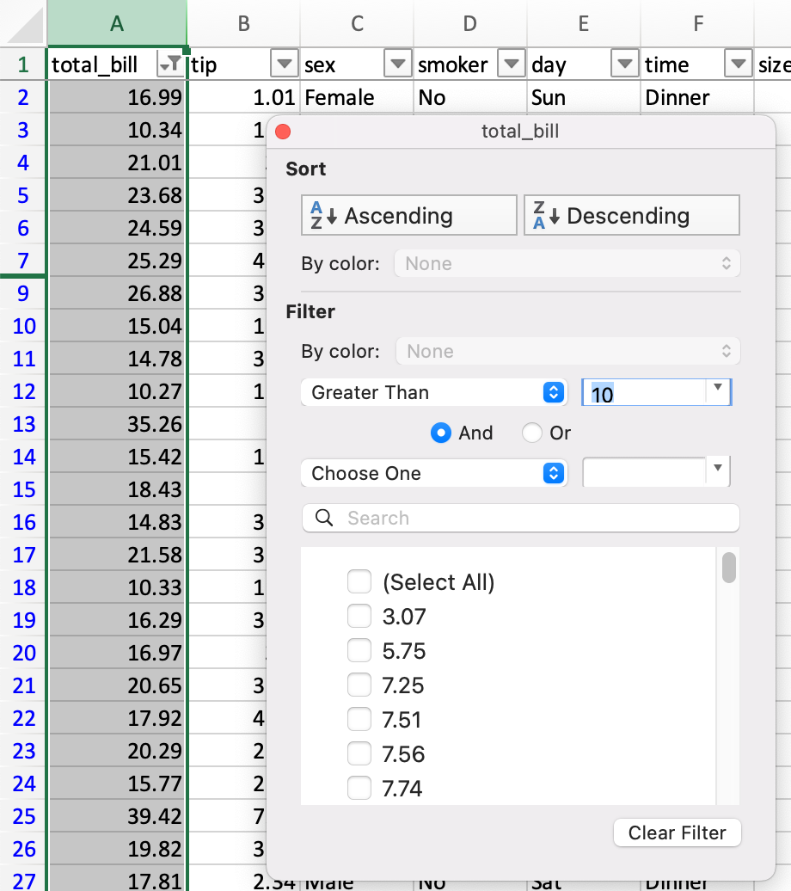
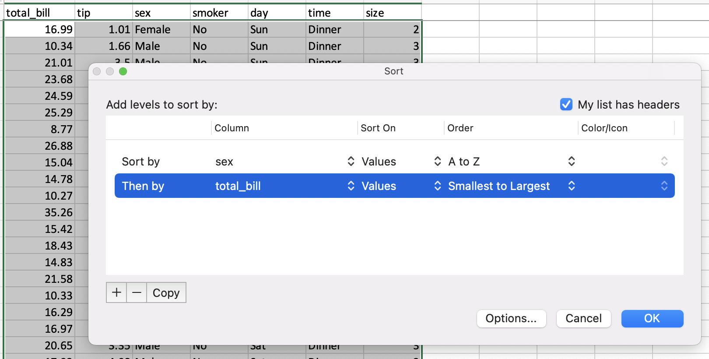
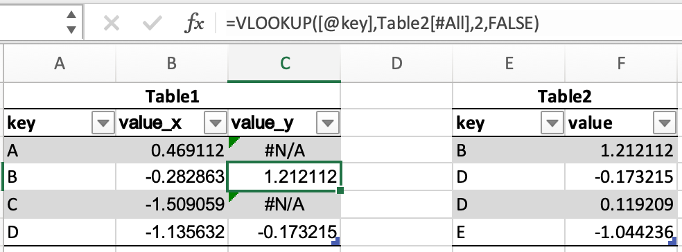
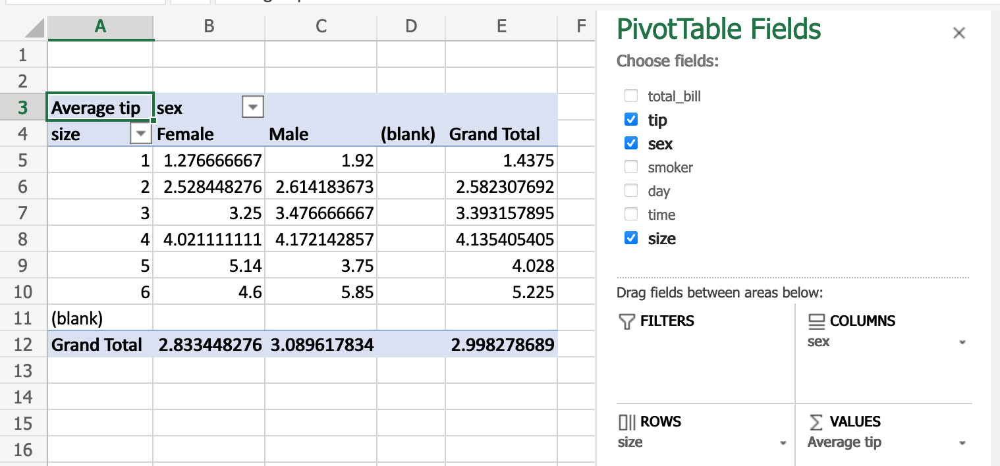

Comparison with spreadsheets#
Since many potential pandas users have some familiarity with spreadsheet programs like Excel, this page is meant to provide some examples of how various spreadsheet operations would be performed using pandas. This page will use terminology and link to documentation for Excel, but much will be the same/similar in Google Sheets, LibreOffice Calc, Apple Numbers, and other Excel-compatible spreadsheet software.
If you’re new to pandas, you might want to first read through 10 Minutes to pandas to familiarize yourself with the library.
As is customary, we import pandas and NumPy as follows:
In [1]: import pandas as pd
In [2]: import numpy as np
Data structures#
General terminology translation#
pandas |
Excel |
|---|---|
|
worksheet |
|
column |
|
row headings |
row |
row |
|
empty cell |
DataFrame#
A DataFrame in pandas is analogous to an Excel worksheet. While an Excel workbook can contain
multiple worksheets, pandas DataFrames exist independently.
Series#
A Series is the data structure that represents one column of a DataFrame. Working with a
Series is analogous to referencing a column of a spreadsheet.
Index#
Every DataFrame and Series has an Index, which are labels on the rows of the data. In
pandas, if no index is specified, a RangeIndex is used by default (first row = 0,
second row = 1, and so on), analogous to row headings/numbers in spreadsheets.
In pandas, indexes can be set to one (or multiple) unique values, which is like having a column that
is used as the row identifier in a worksheet. Unlike most spreadsheets, these Index values can
actually be used to reference the rows. (Note that this can be done in Excel with structured
references.)
For example, in spreadsheets, you would reference the first row as A1:Z1, while in pandas you
could use populations.loc['Chicago'].
Index values are also persistent, so if you re-order the rows in a DataFrame, the label for a
particular row don’t change.
See the indexing documentation for much more on how to use an Index
effectively.
Copies vs. in place operations#
Most pandas operations return copies of the Series/DataFrame. To make the changes “stick”,
you’ll need to either assign to a new variable:
sorted_df = df.sort_values("col1")
or overwrite the original one:
df = df.sort_values("col1")
Note
You will see an inplace=True or copy=False keyword argument available for
some methods:
df.replace(5, inplace=True)
There is an active discussion about deprecating and removing inplace and copy for
most methods (e.g. dropna) except for a very small subset of methods
(including replace). Both keywords won’t be
necessary anymore in the context of Copy-on-Write. The proposal can be found
here.
Data input / output#
Constructing a DataFrame from values#
In a spreadsheet, values can be typed directly into cells.
A pandas DataFrame can be constructed in many different ways,
but for a small number of values, it is often convenient to specify it as
a Python dictionary, where the keys are the column names
and the values are the data.
In [3]: df = pd.DataFrame({"x": [1, 3, 5], "y": [2, 4, 6]})
In [4]: df
Out[4]:
x y
0 1 2
1 3 4
2 5 6
Reading external data#
Both Excel and pandas can import data from various sources in various formats.
CSV#
Let’s load and display the tips
dataset from the pandas tests, which is a CSV file. In Excel, you would download and then
open the CSV.
In pandas, you pass the URL or local path of the CSV file to read_csv():
In [5]: url = (
...: "https://raw.githubusercontent.com/pandas-dev"
...: "/pandas/main/pandas/tests/io/data/csv/tips.csv"
...: )
...:
In [6]: tips = pd.read_csv(url)
In [7]: tips
Out[7]:
total_bill tip sex smoker day time size
0 16.99 1.01 Female No Sun Dinner 2
1 10.34 1.66 Male No Sun Dinner 3
2 21.01 3.50 Male No Sun Dinner 3
3 23.68 3.31 Male No Sun Dinner 2
4 24.59 3.61 Female No Sun Dinner 4
.. ... ... ... ... ... ... ...
239 29.03 5.92 Male No Sat Dinner 3
240 27.18 2.00 Female Yes Sat Dinner 2
241 22.67 2.00 Male Yes Sat Dinner 2
242 17.82 1.75 Male No Sat Dinner 2
243 18.78 3.00 Female No Thur Dinner 2
[244 rows x 7 columns]
Like Excel’s Text Import Wizard,
read_csv can take a number of parameters to specify how the data should be parsed. For
example, if the data was instead tab delimited, and did not have column names, the pandas command
would be:
tips = pd.read_csv("tips.csv", sep="\t", header=None)
# alternatively, read_table is an alias to read_csv with tab delimiter
tips = pd.read_table("tips.csv", header=None)
Excel files#
Excel opens various Excel file formats by double-clicking them, or using the Open menu. In pandas, you use special methods for reading and writing from/to Excel files.
Let’s first create a new Excel file based on the tips dataframe in the above example:
tips.to_excel("./tips.xlsx")
Should you wish to subsequently access the data in the tips.xlsx file, you can read it into your module using
tips_df = pd.read_excel("./tips.xlsx", index_col=0)
You have just read in an Excel file using pandas!
Limiting output#
Spreadsheet programs will only show one screenful of data at a time and then allow you to scroll, so
there isn’t really a need to limit output. In pandas, you’ll need to put a little more thought into
controlling how your DataFrames are displayed.
By default, pandas will truncate output of large DataFrames to show the first and last rows.
This can be overridden by changing the pandas options, or using
DataFrame.head() or DataFrame.tail().
In [8]: tips.head(5)
Out[8]:
total_bill tip sex smoker day time size
0 16.99 1.01 Female No Sun Dinner 2
1 10.34 1.66 Male No Sun Dinner 3
2 21.01 3.50 Male No Sun Dinner 3
3 23.68 3.31 Male No Sun Dinner 2
4 24.59 3.61 Female No Sun Dinner 4
Exporting data#
By default, desktop spreadsheet software will save to its respective file format (.xlsx, .ods, etc). You can, however, save to other file formats.
pandas can create Excel files, CSV, or a number of other formats.
Data operations#
Operations on columns#
In spreadsheets, formulas are often created in individual cells and then dragged into other cells to compute them for other columns. In pandas, you’re able to do operations on whole columns directly.
pandas provides vectorized operations by specifying the individual Series in the
DataFrame. New columns can be assigned in the same way. The DataFrame.drop() method drops
a column from the DataFrame.
In [9]: tips["total_bill"] = tips["total_bill"] - 2
In [10]: tips["new_bill"] = tips["total_bill"] / 2
In [11]: tips
Out[11]:
total_bill tip sex smoker day time size new_bill
0 14.99 1.01 Female No Sun Dinner 2 7.495
1 8.34 1.66 Male No Sun Dinner 3 4.170
2 19.01 3.50 Male No Sun Dinner 3 9.505
3 21.68 3.31 Male No Sun Dinner 2 10.840
4 22.59 3.61 Female No Sun Dinner 4 11.295
.. ... ... ... ... ... ... ... ...
239 27.03 5.92 Male No Sat Dinner 3 13.515
240 25.18 2.00 Female Yes Sat Dinner 2 12.590
241 20.67 2.00 Male Yes Sat Dinner 2 10.335
242 15.82 1.75 Male No Sat Dinner 2 7.910
243 16.78 3.00 Female No Thur Dinner 2 8.390
[244 rows x 8 columns]
In [12]: tips = tips.drop("new_bill", axis=1)
Note that we aren’t having to tell it to do that subtraction cell-by-cell — pandas handles that for us. See how to create new columns derived from existing columns.
Filtering#
In Excel, filtering is done through a graphical menu.
DataFrames can be filtered in multiple ways; the most intuitive of which is using boolean indexing.
In [13]: tips[tips["total_bill"] > 10]
Out[13]:
total_bill tip sex smoker day time size
0 14.99 1.01 Female No Sun Dinner 2
2 19.01 3.50 Male No Sun Dinner 3
3 21.68 3.31 Male No Sun Dinner 2
4 22.59 3.61 Female No Sun Dinner 4
5 23.29 4.71 Male No Sun Dinner 4
.. ... ... ... ... ... ... ...
239 27.03 5.92 Male No Sat Dinner 3
240 25.18 2.00 Female Yes Sat Dinner 2
241 20.67 2.00 Male Yes Sat Dinner 2
242 15.82 1.75 Male No Sat Dinner 2
243 16.78 3.00 Female No Thur Dinner 2
[204 rows x 7 columns]
The above statement is simply passing a Series of True/False objects to the DataFrame,
returning all rows with True.
In [14]: is_dinner = tips["time"] == "Dinner"
In [15]: is_dinner
Out[15]:
0 True
1 True
2 True
3 True
4 True
...
239 True
240 True
241 True
242 True
243 True
Name: time, Length: 244, dtype: bool
In [16]: is_dinner.value_counts()
Out[16]:
time
True 176
False 68
Name: count, dtype: int64
In [17]: tips[is_dinner]
Out[17]:
total_bill tip sex smoker day time size
0 14.99 1.01 Female No Sun Dinner 2
1 8.34 1.66 Male No Sun Dinner 3
2 19.01 3.50 Male No Sun Dinner 3
3 21.68 3.31 Male No Sun Dinner 2
4 22.59 3.61 Female No Sun Dinner 4
.. ... ... ... ... ... ... ...
239 27.03 5.92 Male No Sat Dinner 3
240 25.18 2.00 Female Yes Sat Dinner 2
241 20.67 2.00 Male Yes Sat Dinner 2
242 15.82 1.75 Male No Sat Dinner 2
243 16.78 3.00 Female No Thur Dinner 2
[176 rows x 7 columns]
If/then logic#
Let’s say we want to make a bucket column with values of low and high, based on whether
the total_bill is less or more than $10.
In spreadsheets, logical comparison can be done with conditional formulas.
We’d use a formula of =IF(A2 < 10, "low", "high"), dragged to all cells in a new bucket
column.
The same operation in pandas can be accomplished using
the where method from numpy.
In [18]: tips["bucket"] = np.where(tips["total_bill"] < 10, "low", "high")
In [19]: tips
Out[19]:
total_bill tip sex smoker day time size bucket
0 14.99 1.01 Female No Sun Dinner 2 high
1 8.34 1.66 Male No Sun Dinner 3 low
2 19.01 3.50 Male No Sun Dinner 3 high
3 21.68 3.31 Male No Sun Dinner 2 high
4 22.59 3.61 Female No Sun Dinner 4 high
.. ... ... ... ... ... ... ... ...
239 27.03 5.92 Male No Sat Dinner 3 high
240 25.18 2.00 Female Yes Sat Dinner 2 high
241 20.67 2.00 Male Yes Sat Dinner 2 high
242 15.82 1.75 Male No Sat Dinner 2 high
243 16.78 3.00 Female No Thur Dinner 2 high
[244 rows x 8 columns]
Date functionality#
This section will refer to “dates”, but timestamps are handled similarly.
We can think of date functionality in two parts: parsing, and output. In spreadsheets, date values are generally parsed automatically, though there is a DATEVALUE function if you need it. In pandas, you need to explicitly convert plain text to datetime objects, either while reading from a CSV or once in a DataFrame.
Once parsed, spreadsheets display the dates in a default format, though the format can be changed.
In pandas, you’ll generally want to keep dates as datetime objects while you’re doing
calculations with them. Outputting parts of dates (such as the year) is done through date
functions
in spreadsheets, and datetime properties in pandas.
Given date1 and date2 in columns A and B of a spreadsheet, you might have these
formulas:
column |
formula |
|---|---|
|
|
|
|
|
|
|
|
The equivalent pandas operations are shown below.
In [20]: tips["date1"] = pd.Timestamp("2013-01-15")
In [21]: tips["date2"] = pd.Timestamp("2015-02-15")
In [22]: tips["date1_year"] = tips["date1"].dt.year
In [23]: tips["date2_month"] = tips["date2"].dt.month
In [24]: tips["date1_next"] = tips["date1"] + pd.offsets.MonthBegin()
In [25]: tips["months_between"] = tips["date2"].dt.to_period("M") - tips[
....: "date1"
....: ].dt.to_period("M")
....:
In [26]: tips[
....: ["date1", "date2", "date1_year", "date2_month", "date1_next", "months_between"]
....: ]
....:
Out[26]:
date1 date2 date1_year date2_month date1_next months_between
0 2013-01-15 2015-02-15 2013 2 2013-02-01 <25 * MonthEnds>
1 2013-01-15 2015-02-15 2013 2 2013-02-01 <25 * MonthEnds>
2 2013-01-15 2015-02-15 2013 2 2013-02-01 <25 * MonthEnds>
3 2013-01-15 2015-02-15 2013 2 2013-02-01 <25 * MonthEnds>
4 2013-01-15 2015-02-15 2013 2 2013-02-01 <25 * MonthEnds>
.. ... ... ... ... ... ...
239 2013-01-15 2015-02-15 2013 2 2013-02-01 <25 * MonthEnds>
240 2013-01-15 2015-02-15 2013 2 2013-02-01 <25 * MonthEnds>
241 2013-01-15 2015-02-15 2013 2 2013-02-01 <25 * MonthEnds>
242 2013-01-15 2015-02-15 2013 2 2013-02-01 <25 * MonthEnds>
243 2013-01-15 2015-02-15 2013 2 2013-02-01 <25 * MonthEnds>
[244 rows x 6 columns]
See Time series / date functionality for more details.
Selection of columns#
In spreadsheets, you can select columns you want by:
Referencing a range from one worksheet into another
Since spreadsheet columns are typically named in a header row, renaming a column is simply a matter of changing the text in that first cell.
The same operations are expressed in pandas below.
Keep certain columns#
In [27]: tips[["sex", "total_bill", "tip"]]
Out[27]:
sex total_bill tip
0 Female 14.99 1.01
1 Male 8.34 1.66
2 Male 19.01 3.50
3 Male 21.68 3.31
4 Female 22.59 3.61
.. ... ... ...
239 Male 27.03 5.92
240 Female 25.18 2.00
241 Male 20.67 2.00
242 Male 15.82 1.75
243 Female 16.78 3.00
[244 rows x 3 columns]
Drop a column#
In [28]: tips.drop("sex", axis=1)
Out[28]:
total_bill tip smoker day time size
0 14.99 1.01 No Sun Dinner 2
1 8.34 1.66 No Sun Dinner 3
2 19.01 3.50 No Sun Dinner 3
3 21.68 3.31 No Sun Dinner 2
4 22.59 3.61 No Sun Dinner 4
.. ... ... ... ... ... ...
239 27.03 5.92 No Sat Dinner 3
240 25.18 2.00 Yes Sat Dinner 2
241 20.67 2.00 Yes Sat Dinner 2
242 15.82 1.75 No Sat Dinner 2
243 16.78 3.00 No Thur Dinner 2
[244 rows x 6 columns]
Rename a column#
In [29]: tips.rename(columns={"total_bill": "total_bill_2"})
Out[29]:
total_bill_2 tip sex smoker day time size
0 14.99 1.01 Female No Sun Dinner 2
1 8.34 1.66 Male No Sun Dinner 3
2 19.01 3.50 Male No Sun Dinner 3
3 21.68 3.31 Male No Sun Dinner 2
4 22.59 3.61 Female No Sun Dinner 4
.. ... ... ... ... ... ... ...
239 27.03 5.92 Male No Sat Dinner 3
240 25.18 2.00 Female Yes Sat Dinner 2
241 20.67 2.00 Male Yes Sat Dinner 2
242 15.82 1.75 Male No Sat Dinner 2
243 16.78 3.00 Female No Thur Dinner 2
[244 rows x 7 columns]
Sorting by values#
Sorting in spreadsheets is accomplished via the sort dialog.
pandas has a DataFrame.sort_values() method, which takes a list of columns to sort by.
In [30]: tips = tips.sort_values(["sex", "total_bill"])
In [31]: tips
Out[31]:
total_bill tip sex smoker day time size
67 1.07 1.00 Female Yes Sat Dinner 1
92 3.75 1.00 Female Yes Fri Dinner 2
111 5.25 1.00 Female No Sat Dinner 1
145 6.35 1.50 Female No Thur Lunch 2
135 6.51 1.25 Female No Thur Lunch 2
.. ... ... ... ... ... ... ...
182 43.35 3.50 Male Yes Sun Dinner 3
156 46.17 5.00 Male No Sun Dinner 6
59 46.27 6.73 Male No Sat Dinner 4
212 46.33 9.00 Male No Sat Dinner 4
170 48.81 10.00 Male Yes Sat Dinner 3
[244 rows x 7 columns]
String processing#
Finding length of string#
In spreadsheets, the number of characters in text can be found with the LEN function. This can be used with the TRIM function to remove extra whitespace.
=LEN(TRIM(A2))
You can find the length of a character string with Series.str.len().
In Python 3, all strings are Unicode strings. len includes trailing blanks.
Use len and rstrip to exclude trailing blanks.
In [32]: tips["time"].str.len()
Out[32]:
67 6
92 6
111 6
145 5
135 5
..
182 6
156 6
59 6
212 6
170 6
Name: time, Length: 244, dtype: int64
In [33]: tips["time"].str.rstrip().str.len()
Out[33]:
67 6
92 6
111 6
145 5
135 5
..
182 6
156 6
59 6
212 6
170 6
Name: time, Length: 244, dtype: int64
Note this will still include multiple spaces within the string, so isn’t 100% equivalent.
Finding position of substring#
The FIND
spreadsheet function returns the position of a substring, with the first character being 1.
You can find the position of a character in a column of strings with the Series.str.find()
method. find searches for the first position of the substring. If the substring is found, the
method returns its position. If not found, it returns -1. Keep in mind that Python indexes are
zero-based.
In [34]: tips["sex"].str.find("ale")
Out[34]:
67 3
92 3
111 3
145 3
135 3
..
182 1
156 1
59 1
212 1
170 1
Name: sex, Length: 244, dtype: int64
Extracting substring by position#
Spreadsheets have a MID formula for extracting a substring from a given position. To get the first character:
=MID(A2,1,1)
With pandas you can use [] notation to extract a substring
from a string by position locations. Keep in mind that Python
indexes are zero-based.
In [35]: tips["sex"].str[0:1]
Out[35]:
67 F
92 F
111 F
145 F
135 F
..
182 M
156 M
59 M
212 M
170 M
Name: sex, Length: 244, dtype: object
Extracting nth word#
In Excel, you might use the Text to Columns Wizard for splitting text and retrieving a specific column. (Note it’s possible to do so through a formula as well.)
The simplest way to extract words in pandas is to split the strings by spaces, then reference the word by index. Note there are more powerful approaches should you need them.
In [36]: firstlast = pd.DataFrame({"String": ["John Smith", "Jane Cook"]})
In [37]: firstlast["First_Name"] = firstlast["String"].str.split(" ", expand=True)[0]
In [38]: firstlast["Last_Name"] = firstlast["String"].str.rsplit(" ", expand=True)[1]
In [39]: firstlast
Out[39]:
String First_Name Last_Name
0 John Smith John Smith
1 Jane Cook Jane Cook
Changing case#
Spreadsheets provide UPPER, LOWER, and PROPER functions for converting text to upper, lower, and title case, respectively.
The equivalent pandas methods are Series.str.upper(), Series.str.lower(), and
Series.str.title().
In [40]: firstlast = pd.DataFrame({"string": ["John Smith", "Jane Cook"]})
In [41]: firstlast["upper"] = firstlast["string"].str.upper()
In [42]: firstlast["lower"] = firstlast["string"].str.lower()
In [43]: firstlast["title"] = firstlast["string"].str.title()
In [44]: firstlast
Out[44]:
string upper lower title
0 John Smith JOHN SMITH john smith John Smith
1 Jane Cook JANE COOK jane cook Jane Cook
Merging#
The following tables will be used in the merge examples:
In [45]: df1 = pd.DataFrame({"key": ["A", "B", "C", "D"], "value": np.random.randn(4)})
In [46]: df1
Out[46]:
key value
0 A 0.469112
1 B -0.282863
2 C -1.509059
3 D -1.135632
In [47]: df2 = pd.DataFrame({"key": ["B", "D", "D", "E"], "value": np.random.randn(4)})
In [48]: df2
Out[48]:
key value
0 B 1.212112
1 D -0.173215
2 D 0.119209
3 E -1.044236
In Excel, there are merging of tables can be done through a VLOOKUP.
pandas DataFrames have a merge() method, which provides similar functionality. The
data does not have to be sorted ahead of time, and different join types are accomplished via the
how keyword.
In [49]: inner_join = df1.merge(df2, on=["key"], how="inner")
In [50]: inner_join
Out[50]:
key value_x value_y
0 B -0.282863 1.212112
1 D -1.135632 -0.173215
2 D -1.135632 0.119209
In [51]: left_join = df1.merge(df2, on=["key"], how="left")
In [52]: left_join
Out[52]:
key value_x value_y
0 A 0.469112 NaN
1 B -0.282863 1.212112
2 C -1.509059 NaN
3 D -1.135632 -0.173215
4 D -1.135632 0.119209
In [53]: right_join = df1.merge(df2, on=["key"], how="right")
In [54]: right_join
Out[54]:
key value_x value_y
0 B -0.282863 1.212112
1 D -1.135632 -0.173215
2 D -1.135632 0.119209
3 E NaN -1.044236
In [55]: outer_join = df1.merge(df2, on=["key"], how="outer")
In [56]: outer_join
Out[56]:
key value_x value_y
0 A 0.469112 NaN
1 B -0.282863 1.212112
2 C -1.509059 NaN
3 D -1.135632 -0.173215
4 D -1.135632 0.119209
5 E NaN -1.044236
merge has a number of advantages over VLOOKUP:
The lookup value doesn’t need to be the first column of the lookup table
If multiple rows are matched, there will be one row for each match, instead of just the first
It will include all columns from the lookup table, instead of just a single specified column
It supports more complex join operations
Other considerations#
Fill Handle#
Create a series of numbers following a set pattern in a certain set of cells. In a spreadsheet, this would be done by shift+drag after entering the first number or by entering the first two or three values and then dragging.
This can be achieved by creating a series and assigning it to the desired cells.
In [57]: df = pd.DataFrame({"AAA": [1] * 8, "BBB": list(range(0, 8))})
In [58]: df
Out[58]:
AAA BBB
0 1 0
1 1 1
2 1 2
3 1 3
4 1 4
5 1 5
6 1 6
7 1 7
In [59]: series = list(range(1, 5))
In [60]: series
Out[60]: [1, 2, 3, 4]
In [61]: df.loc[2:5, "AAA"] = series
In [62]: df
Out[62]:
AAA BBB
0 1 0
1 1 1
2 1 2
3 2 3
4 3 4
5 4 5
6 1 6
7 1 7
Drop Duplicates#
Excel has built-in functionality for removing duplicate values.
This is supported in pandas via drop_duplicates().
In [63]: df = pd.DataFrame(
....: {
....: "class": ["A", "A", "A", "B", "C", "D"],
....: "student_count": [42, 35, 42, 50, 47, 45],
....: "all_pass": ["Yes", "Yes", "Yes", "No", "No", "Yes"],
....: }
....: )
....:
In [64]: df.drop_duplicates()
Out[64]:
class student_count all_pass
0 A 42 Yes
1 A 35 Yes
3 B 50 No
4 C 47 No
5 D 45 Yes
In [65]: df.drop_duplicates(["class", "student_count"])
Out[65]:
class student_count all_pass
0 A 42 Yes
1 A 35 Yes
3 B 50 No
4 C 47 No
5 D 45 Yes
Pivot Tables#
PivotTables
from spreadsheets can be replicated in pandas through Reshaping and pivot tables. Using the tips dataset again,
let’s find the average gratuity by size of the party and sex of the server.
In Excel, we use the following configuration for the PivotTable:
The equivalent in pandas:
In [66]: pd.pivot_table(
....: tips, values="tip", index=["size"], columns=["sex"], aggfunc=np.average
....: )
....:
Out[66]:
sex Female Male
size
1 1.276667 1.920000
2 2.528448 2.614184
3 3.250000 3.476667
4 4.021111 4.172143
5 5.140000 3.750000
6 4.600000 5.850000
Adding a row#
Assuming we are using a RangeIndex (numbered 0, 1, etc.), we can use concat() to add a row to the bottom of a DataFrame.
In [67]: df
Out[67]:
class student_count all_pass
0 A 42 Yes
1 A 35 Yes
2 A 42 Yes
3 B 50 No
4 C 47 No
5 D 45 Yes
In [68]: new_row = pd.DataFrame([["E", 51, True]],
....: columns=["class", "student_count", "all_pass"])
....:
In [69]: pd.concat([df, new_row])
Out[69]:
class student_count all_pass
0 A 42 Yes
1 A 35 Yes
2 A 42 Yes
3 B 50 No
4 C 47 No
5 D 45 Yes
0 E 51 True
Find and Replace#
Excel’s Find dialog
takes you to cells that match, one by one. In pandas, this operation is generally done for an
entire column or DataFrame at once through conditional expressions.
In [70]: tips
Out[70]:
total_bill tip sex smoker day time size
67 1.07 1.00 Female Yes Sat Dinner 1
92 3.75 1.00 Female Yes Fri Dinner 2
111 5.25 1.00 Female No Sat Dinner 1
145 6.35 1.50 Female No Thur Lunch 2
135 6.51 1.25 Female No Thur Lunch 2
.. ... ... ... ... ... ... ...
182 43.35 3.50 Male Yes Sun Dinner 3
156 46.17 5.00 Male No Sun Dinner 6
59 46.27 6.73 Male No Sat Dinner 4
212 46.33 9.00 Male No Sat Dinner 4
170 48.81 10.00 Male Yes Sat Dinner 3
[244 rows x 7 columns]
In [71]: tips == "Sun"
Out[71]:
total_bill tip sex smoker day time size
67 False False False False False False False
92 False False False False False False False
111 False False False False False False False
145 False False False False False False False
135 False False False False False False False
.. ... ... ... ... ... ... ...
182 False False False False True False False
156 False False False False True False False
59 False False False False False False False
212 False False False False False False False
170 False False False False False False False
[244 rows x 7 columns]
In [72]: tips["day"].str.contains("S")
Out[72]:
67 True
92 False
111 True
145 False
135 False
...
182 True
156 True
59 True
212 True
170 True
Name: day, Length: 244, dtype: bool
pandas’ replace() is comparable to Excel’s Replace All.
In [73]: tips.replace("Thu", "Thursday")
Out[73]:
total_bill tip sex smoker day time size
67 1.07 1.00 Female Yes Sat Dinner 1
92 3.75 1.00 Female Yes Fri Dinner 2
111 5.25 1.00 Female No Sat Dinner 1
145 6.35 1.50 Female No Thur Lunch 2
135 6.51 1.25 Female No Thur Lunch 2
.. ... ... ... ... ... ... ...
182 43.35 3.50 Male Yes Sun Dinner 3
156 46.17 5.00 Male No Sun Dinner 6
59 46.27 6.73 Male No Sat Dinner 4
212 46.33 9.00 Male No Sat Dinner 4
170 48.81 10.00 Male Yes Sat Dinner 3
[244 rows x 7 columns]